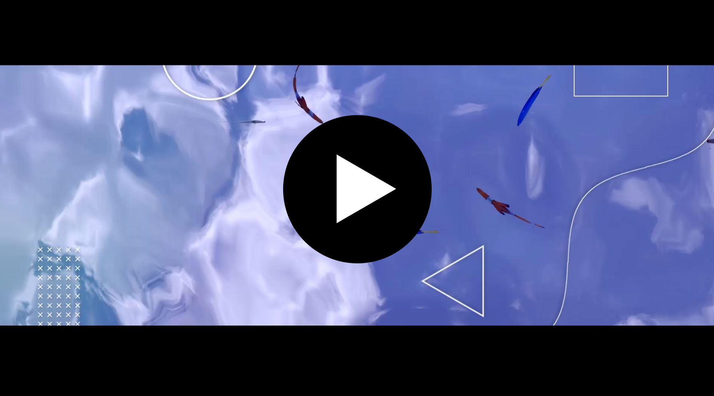

03
作った映像
クリック（もしくはタップ）すると動画が再生されます。

静かに泳ぐ魚たちを、Mayaを用いて表現しました。また、PremierePro、AfterEffects、AviUtlを用いて、ライトリークを追加したり、モーショングラフィックスを追加したりなど、細部までこだわりました。

Deemoという音楽ゲームの「Marigold」の文字PVを作成しました。映像はAviUtlで基盤を作っています。